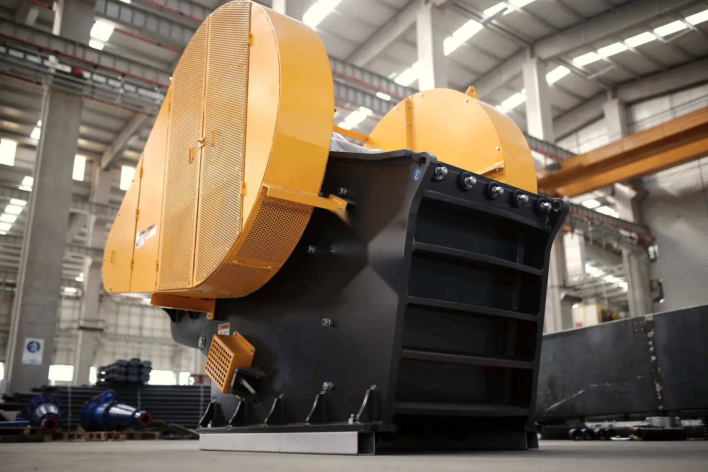
Щековые
Первая стадия: взорванная горная масса, кусок до 1020 мм, породы крепостью до f 20. Простая механика, щёки меняются за смену.
16–800 т/ч5 моделейМодели
Направления
ДробилкиГрохоты Конвейеры скороЗапчасти скороНа этой странице
МоделиПодборЗапчастиПоставкаКейсыЗапросить КП +7 343 000-00-00Подбираем дробилку по крепости породы, нужной фракции и тоннам в час. Везём до площадки, запускаем и держим запчасти на складе, чтобы линия не стояла.
Тип выбирают по породе и стадии. Щековая берёт крупный кусок, конусная доводит гранит до кубовидного щебня, роторная за один проход дробит известняк и бетон.

Первая стадия: взорванная горная масса, кусок до 1020 мм, породы крепостью до f 20. Простая механика, щёки меняются за смену.
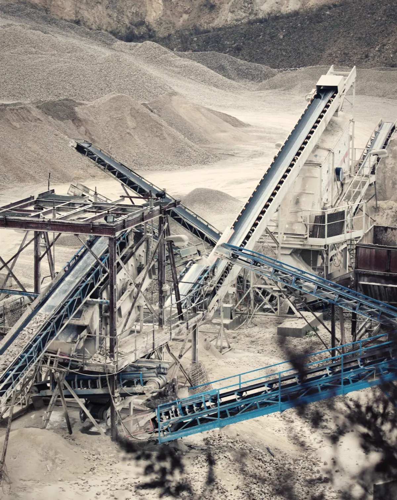
Вторая и третья стадия. Кубовидный щебень 5–20 и 20–40 из гранита и гравия. Щель регулируется гидравликой прямо под нагрузкой.
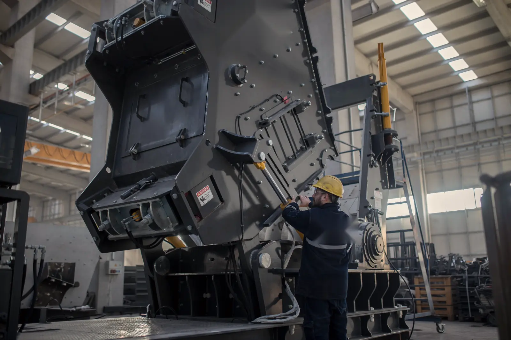
Известняк, доломит, бетон и асфальт. Щебень 0–40 за один проход вместо двух дробилок. Била переворачиваются и меняются без крана.
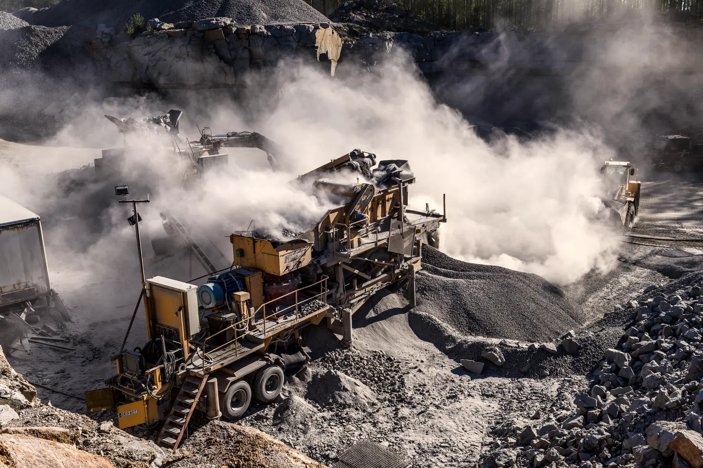
Дробилка с грохотом на гусеницах и своим дизелем. Заехала на участок, через час выдаёт щебень. Для подрядчиков, ДСО и карьеров с переездами.
Шестнадцать дробилок: от щековой на 16 т/ч для небольшого карьера до линии на 800 т/ч. Отметьте нужные модели — пришлём КП с ценой, сроком и доставкой.
Таких моделей нет. Опишите задачу в заявке — подберём под заказ.
Производительность — для гранита средней крепости при закрытой щели. На известняке выше на 15–20 %, на абразивной руде ниже. Цифру под вашу породу инженер посчитает по ситовому анализу.
В рабочей версии каталог тянется из 1С.
Четыре вопроса — и справа появится схема линии с моделями из таблицы. Инженер проверит её и пришлёт КП за один рабочий день.
От породы зависит тип дробилки и материал щёк. Полоски — крепость по шкале Протодьяконова.
Считайте готовый продукт. Если привыкли к кубам, умножьте на 1,5: кубометр щебня весит около полутора тонн.
Можно несколько. Грохот в конце линии разделит поток, лишнее вернётся на додрабливание.
Стационарная линия дешевле в тонне, мобильная окупается, когда участок меняется каждые несколько месяцев.
Изнашиваемые детали для всех дробилок из таблицы и для большинства машин, что уже работают на карьерах. Щёки, броню и била отгружаем за один–три дня.
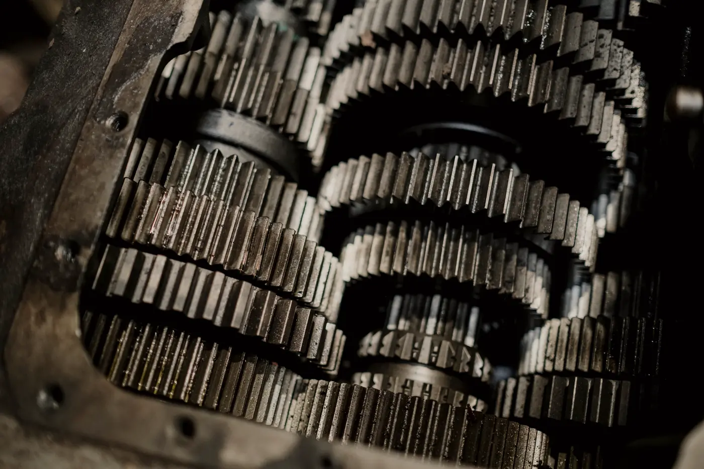
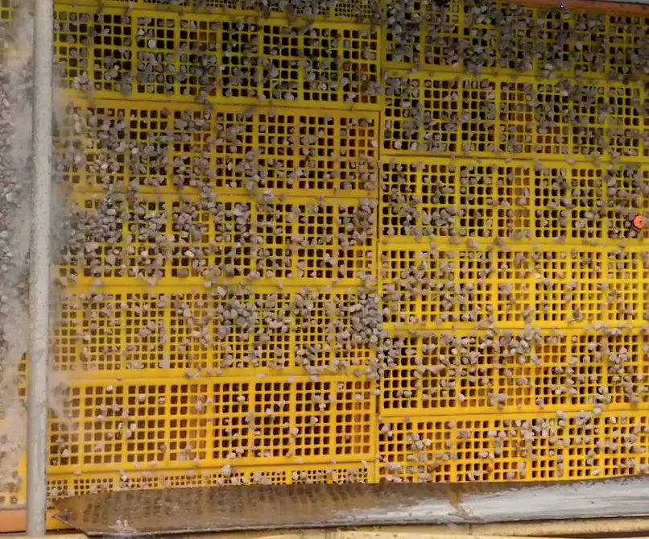
сталь 110Г13Лпод все щековые серии ФЩкомплекты для ФЩ-69 и ФЩ-75 на складе
110Г13Л и 110Г13Х2БРЛпрофиль под грубое, среднее и мелкое дроблениеизнос оценим по фото
хромистый чугун или мартенсит с керамикойресурс на известняке 300–500 тыс. т
эксцентриковый вал в сборе в обмен на старыйподшипники с зазором C3 и C4
ячейка от 1 до 150 ммпод любой грохот
Сита на странице грохотов →Пришлите номер детали, фото шильдика или чертёж. Ответим, есть ли на складе и сколько стоит.
Работаем с юрлицами и ИП по договору поставки, с НДС. Счета и закрывающие документы — через ЭДО.
Порода, тонны в час, фракции, площадка. Подойдут фото, ситовой анализ, схема старой линии.
Инженер считает линию и присылает КП: модели, цена, срок, доставка, монтаж.
Модели со склада отгружаем за две недели, под заказ — за 45–60 дней. Перед отправкой пришлём фото и видео приёмки.
Шеф-монтаж, пусконаладка, обучение операторов. Акт подписываем, когда линия выдаёт вашу фракцию.
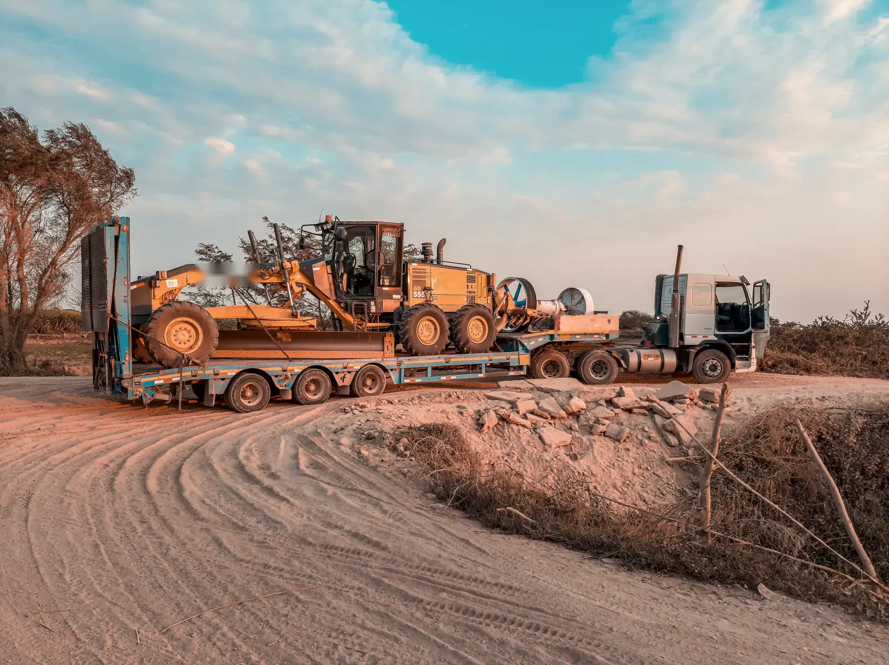
Отвечаем за машину, пока она не выдаст фракцию на вашей площадке. Дальше — гарантия, склад запчастей и инженер, который знает вашу линию.
Здесь будут ваши объекты: фото с площадки, схема линии и цифры после запуска. Пока — три типичных проекта, чтобы было видно формат.
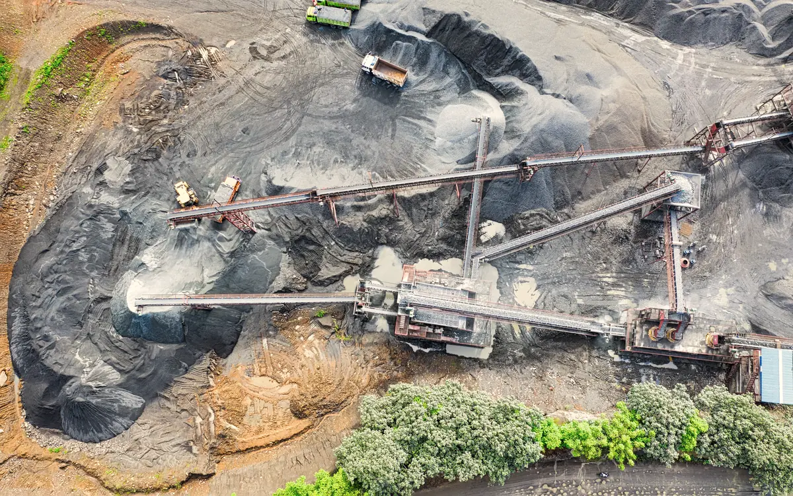
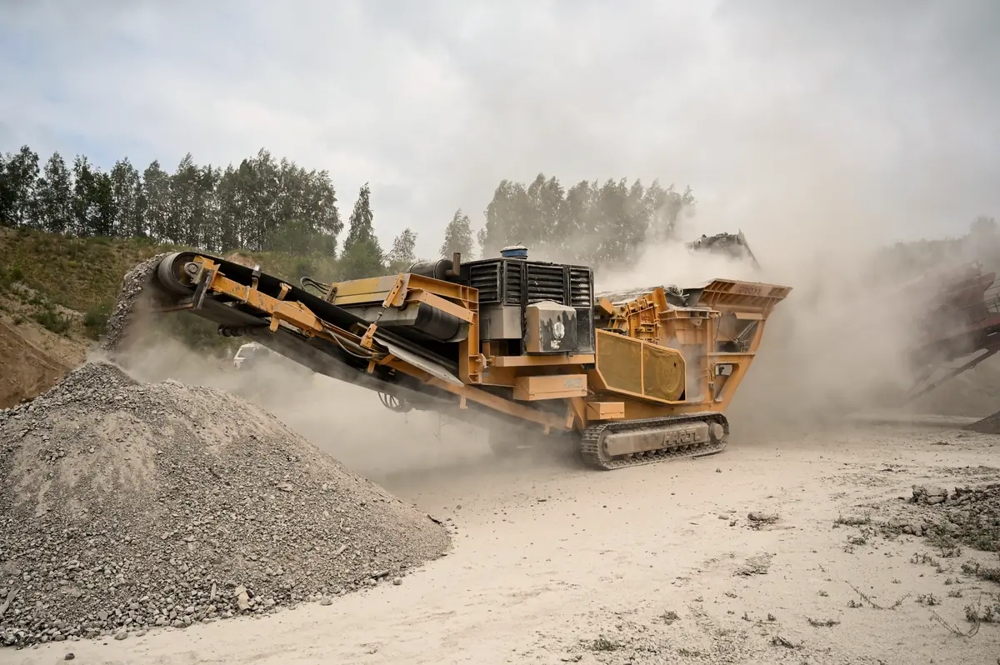
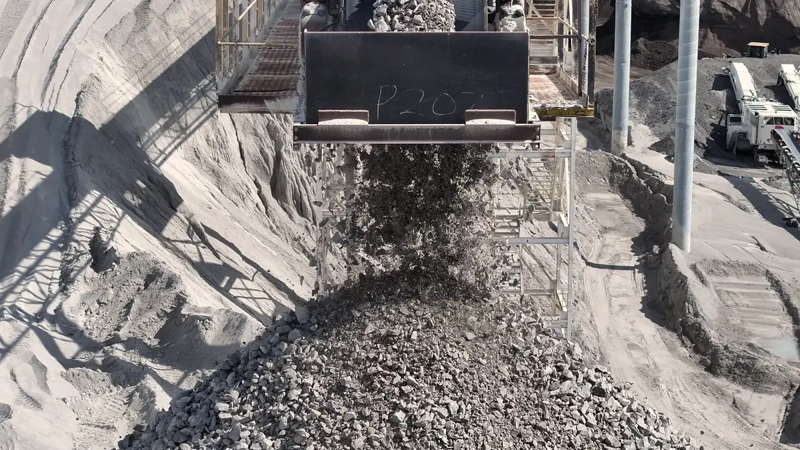
Под каждую группу оборудования — своя страница с таблицей и подбором. Дробилку, грохот и конвейеры посчитаем одной схемой и одним КП.
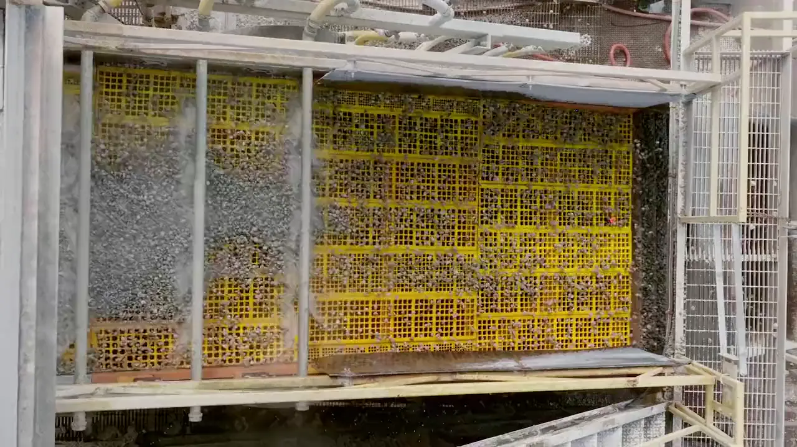
Вибрационные грохоты11 моделей · 1–4 деки · до 900 т/ч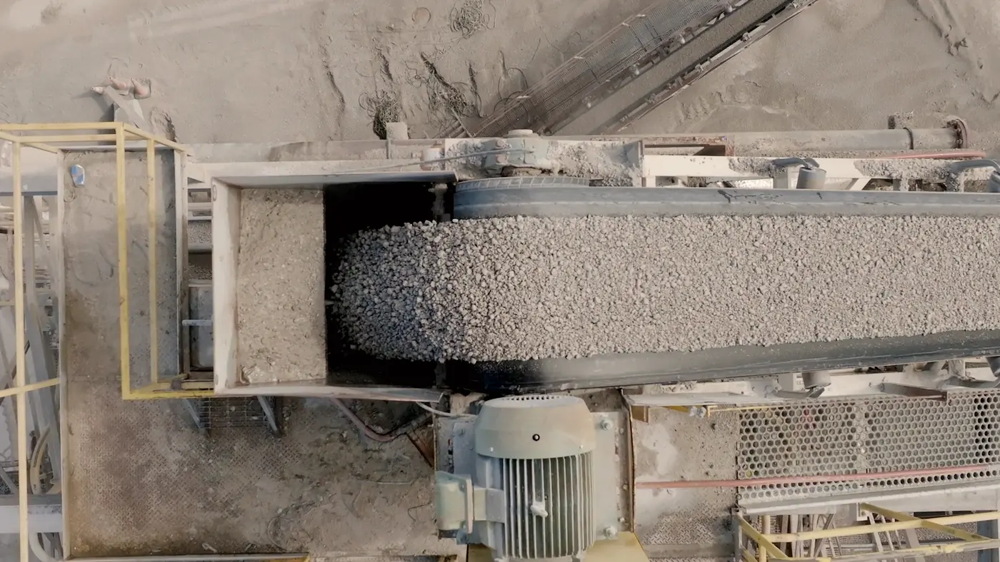
Конвейерыстраница в работе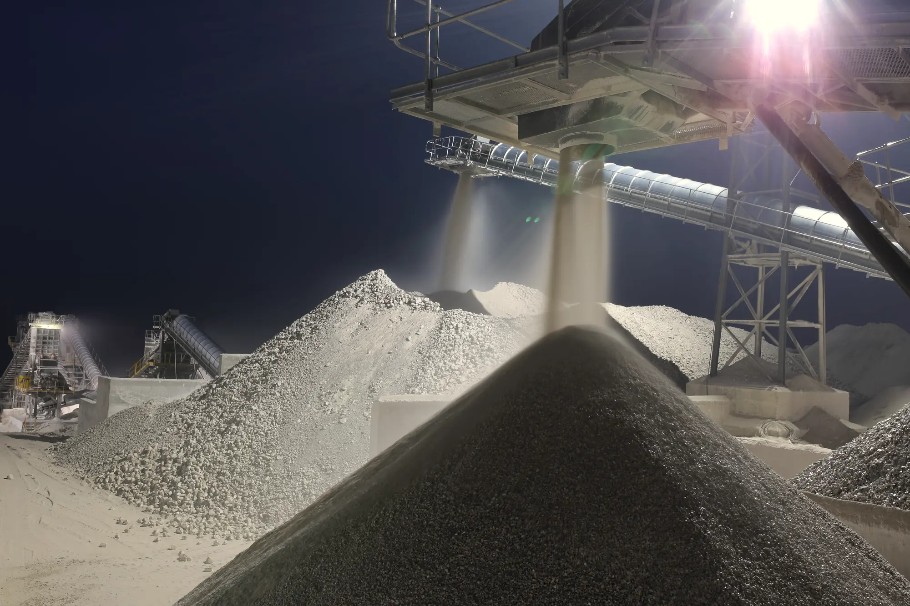
Порода, тонны в час, фракции и где площадка. Можно приложить опросный лист, ситовой анализ или схему действующей линии.